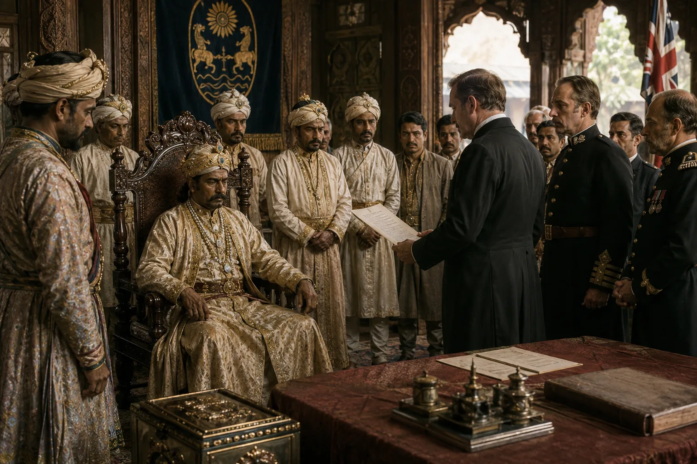

Final British Annexation of Assam and Deposition of Purandar Singha
October 1838 · The last Swargadeo

Accusing him of default and misgovernment, the British formally depose Purandar Singha, annexing Upper Assam into the British Empire and ending the Ahom dynasty forever.
Sources have not yet been catalogued for this record.
People: Captain Francis Jenkins, Purandar Singha
Open this scene in the interactive archive · Follow this event on MAP